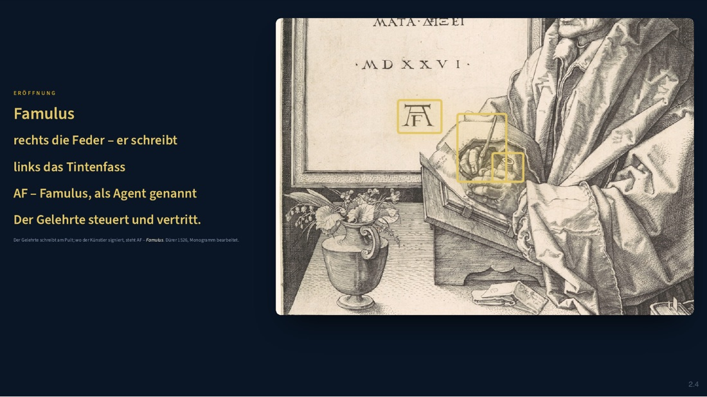
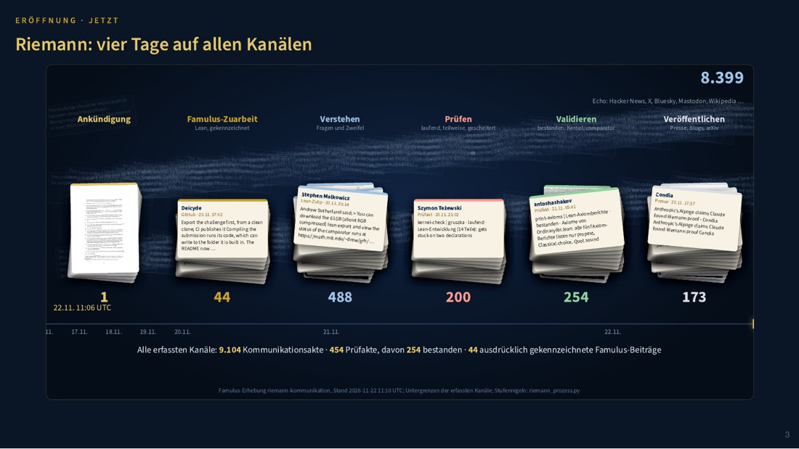
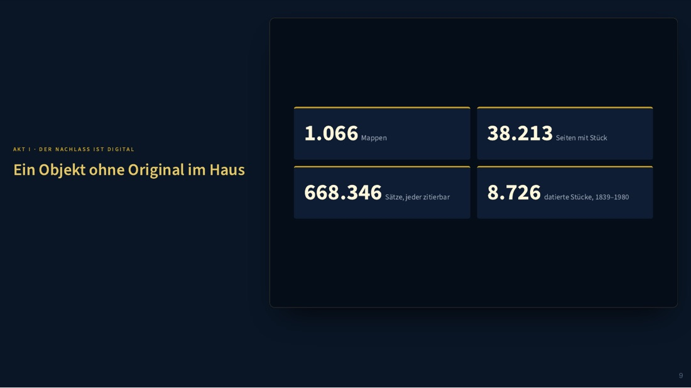
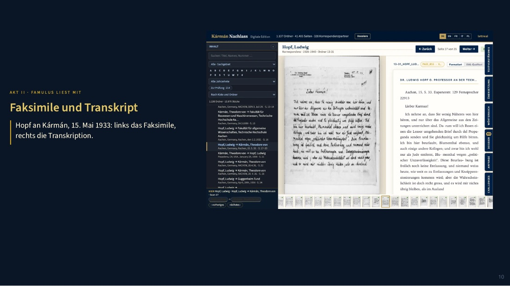
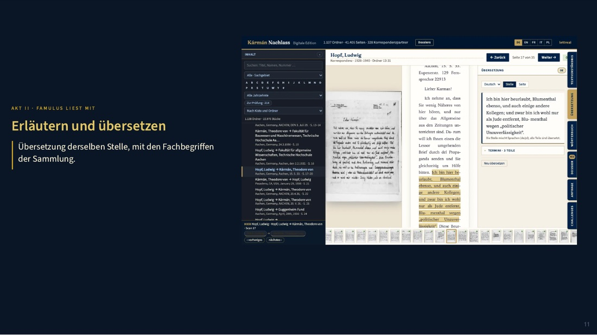
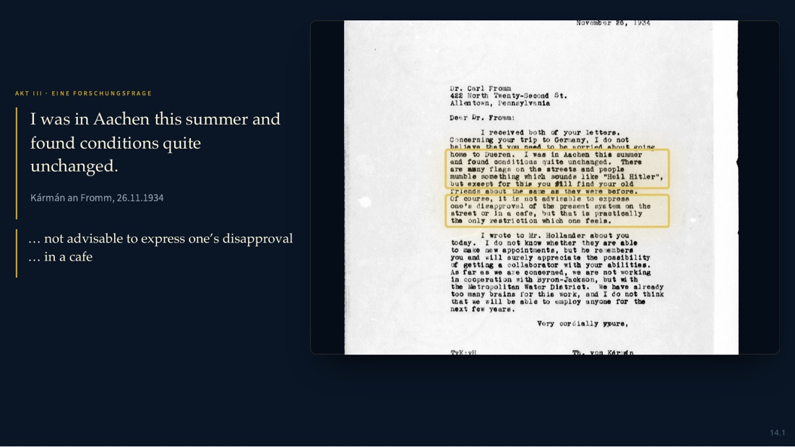
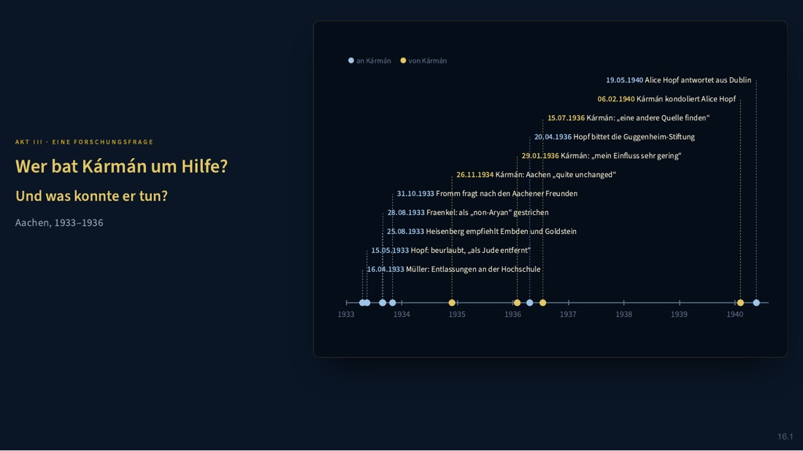
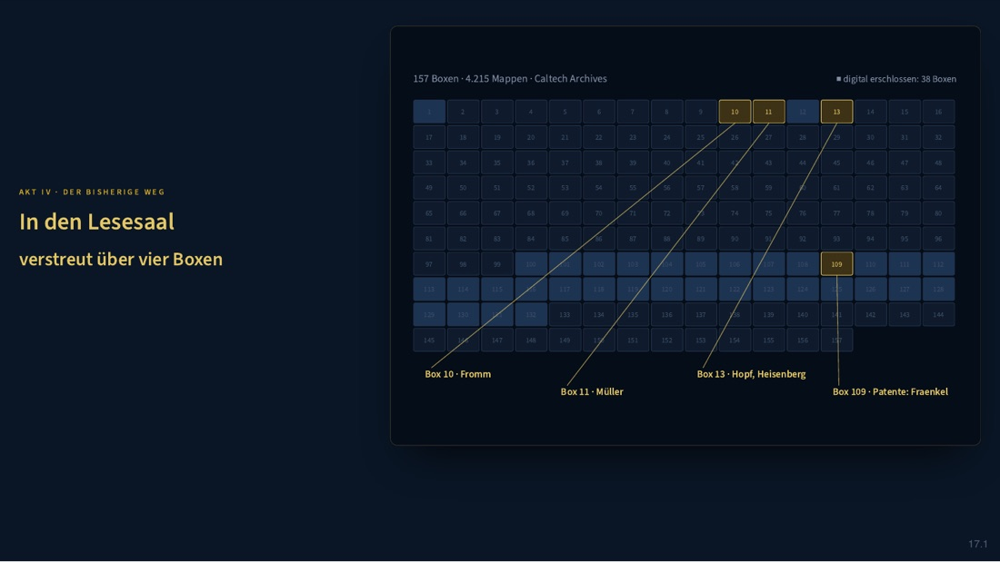
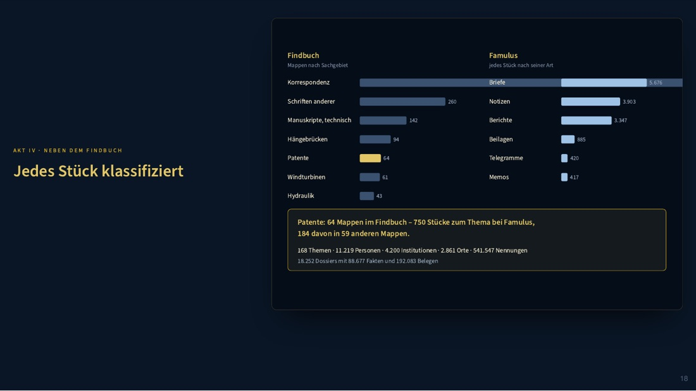
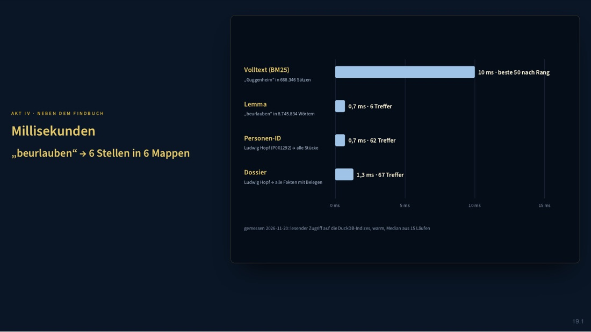

Der Kármán-Nachlass, mit Famulus gesichtet
Vortragsmanuskript · Famulus Lectures 1
Gerd Graßhoff unternimmt den ersten Versuch, einen Vortrag aufzunehmen, wobei die Medien aktiv sind. Das Vorgehen umfasst das Anschließen des HDMI-Kabels. Als Ergebnis wird der Vorgang als wunderbar bezeichnet.
Vortrag von Gerd Graßhoff, Deutsches Museum, München, Seminarraum Forschung, 23. November 2026. Autor des Manuskripts ist der Vortragende. Famulus hat es als famulus aus der Audioaufnahme und den Folien erstellt: Transkription (nemotron-3.5-transcribe (mlx 8bit) + apple-zeitachse + sortformer), Zuordnung zu den Folien, wortnahe Glättung (deepseek-v4.1-flash:cloud) und Manuskriptfassung (deepseek-v4.1-flash:cloud, Anweisung instr:vortrag-manuskript v1.0). Jede Passage trägt am Rand ihre Zeitmarke in der Aufnahme; vorgelesene Folientexte stehen im Wortlaut der Folie; was nicht zu hören war, ist als Lücke ausgewiesen.
Kernaussagen
- Ein erster Versuch, einen Vortrag aufzunehmen, wird gestartet, wobei die Medien aktiv sind. [0:04]
- Das HDMI-Kabel wird angeschlossen. [0:44]
- Gerd Graßhoff bewertet den Vorgang als wunderbar. [0:56]
Der Kármán-Nachlass, mit Famulus gesichtet
Eröffnung

[Dieser Folie ist in der Aufnahme kein gesprochener Text zugeordnet.]
Famulus
Eröffnung

[Dieser Folie ist in der Aufnahme kein gesprochener Text zugeordnet.]
Riemann: vier Tage auf allen Kanälen
Eröffnung · Jetzt

[Dieser Folie ist in der Aufnahme kein gesprochener Text zugeordnet.]
Ein neuer Agent
Eröffnung · Jetzt

[Dieser Folie ist in der Aufnahme kein gesprochener Text zugeordnet.]
Die Kármán-Plattform
Prolog · Live

[Dieser Folie ist in der Aufnahme kein gesprochener Text zugeordnet.]
Was Famulus kann
Prolog · Klick für Klick

[Dieser Folie ist in der Aufnahme kein gesprochener Text zugeordnet.]
Die Werkzeuge rechts
Prolog · Die Leiste rechts

[Dieser Folie ist in der Aufnahme kein gesprochener Text zugeordnet.]
Der Kármán-Nachlass – alles online
Akt I · Deutsches Museum

[Dieser Folie ist in der Aufnahme kein gesprochener Text zugeordnet.]
Ein Objekt ohne Original im Haus
Akt I · Der Nachlass ist digital

[Dieser Folie ist in der Aufnahme kein gesprochener Text zugeordnet.]
Faksimile und Transkript
Akt II · Famulus liest mit

[Dieser Folie ist in der Aufnahme kein gesprochener Text zugeordnet.]
Erläutern und übersetzen
Akt II · Famulus liest mit

[Dieser Folie ist in der Aufnahme kein gesprochener Text zugeordnet.]
Notieren mit Beleg
Akt II · Famulus liest mit

[Dieser Folie ist in der Aufnahme kein gesprochener Text zugeordnet.]
Was sah Kármán in Aachen?
Akt III · Eine Forschungsfrage

[Dieser Folie ist in der Aufnahme kein gesprochener Text zugeordnet.]
Kármán an Fromm, 26.11.1934
Akt III · Eine Forschungsfrage

[Dieser Folie ist in der Aufnahme kein gesprochener Text zugeordnet.]
Hopf an Kármán, 15.5.1933
Akt III · Eine Forschungsfrage

[Dieser Folie ist in der Aufnahme kein gesprochener Text zugeordnet.]
Wer bat Kármán um Hilfe?
Akt III · Eine Forschungsfrage

[Dieser Folie ist in der Aufnahme kein gesprochener Text zugeordnet.]
In den Lesesaal
Akt IV · Der bisherige Weg

[Dieser Folie ist in der Aufnahme kein gesprochener Text zugeordnet.]
Jedes Stück klassifiziert
Akt IV · Neben dem Findbuch

[Dieser Folie ist in der Aufnahme kein gesprochener Text zugeordnet.]
Millisekunden
Akt IV · Neben dem Findbuch

[Dieser Folie ist in der Aufnahme kein gesprochener Text zugeordnet.]
Finden ist nicht Verstehen
Akt IV · Der bisherige Weg
 0:04
0:04
Erster Versuch, einen Vortrag aufzunehmen. Die Medien sind aktiv. Jetzt wird das HDMI-Kabel angeschlossen. Wunderbar.
Zu diesem Manuskript
Passagen in Manuskriptfassung: 1; in wortnaher Fassung: 0; Folienzitate im Wortlaut: 0; ausgewiesene Lücken: 19.
Lücken und Hinweise:
- 24 Folie(n) nach der letzten mit gesprochenem Text ohne Zuordnung: Eine Frage an den Nachlass, Aus vier Boxen ein Vorgang, Jede Stelle hat eine Adresse, „Mein Einfluss sehr gering“, Ein „Ausflug“, Die Antwort hat offene Enden, Ein Netz von Beständen, Dezentral, signiert, zitierbar, Irren, prüfen, korrigieren, Sachlich validiert, Deep Reading, Famulus forscht: das Werkzeug …